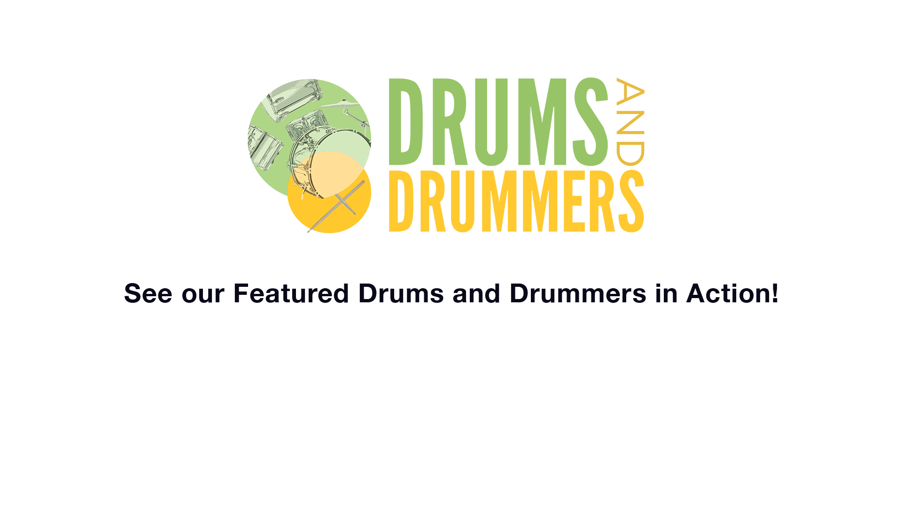

Kenny Aronoff came up with his solo on John Mellencamp’s
“Jack and Diane” on the spot in the recording studio.
Ginger Baker composed Toad as an instrumental he would play
with many projects over the years. It was significant and influential as one of the first
rock drum solos ever recorded
Chris Johnson has been playing with Lady Gaga during her
live performances since 2016. His drumming style was developed over many years growing up playing in church.
Brian Melick designed his LEGO drum set after attending a
LEGO convention with his son. This video features Melick playing a solo on his personal
LEGO kit during a recent concert.

